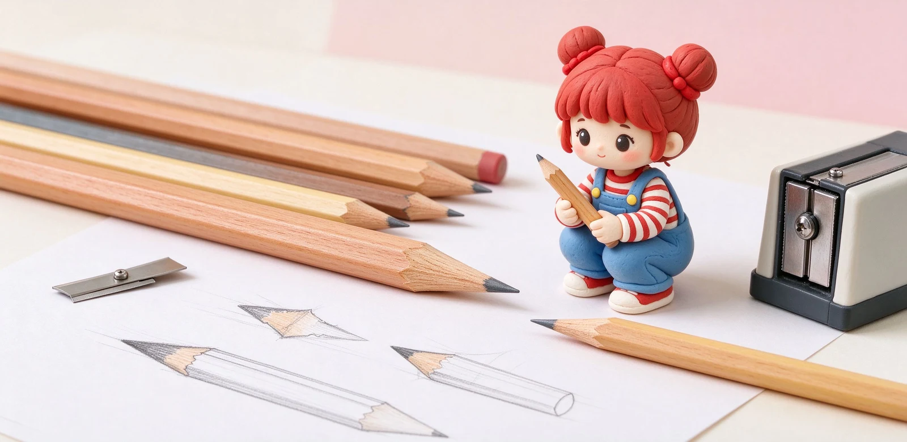

語意摘要：木桿鉛筆的核心優勢是筆芯粗、出墨飽、可以削出不同粗細的筆尖，適合製圖、素描與考試塗卡。常見兩大經典：輝柏嘉 Castell 9000（1905 年發售、16 硬度、SV 接著）與史德樓 Mars Lumograph 100（12 硬度、德國製）。筆桿多為六角形，防滑、不會滾落；削筆有刀片式與捲筆機兩種，畫家偏愛刀片削出長斜尖。
木桿鉛筆還值得用嗎？
在自動鉛筆與中性筆時代，木桿鉛筆還是有它不可取代的位置：筆芯粗、寫起來飽和、可以自己決定筆尖粗細。建築師畫草圖、漫畫家打線稿、考生塗答案卡，都還是木桿鉛筆的天下。
它的缺點也很誠實：要削、會寫短、筆芯會鈍。但對需要長斜尖、大面積塗色的人來說，這正是它的魅力。
兩大經典：Castell 9000 與 Mars Lumograph
輝柏嘉 Castell 9000（1905 年至今）
Castell 9000 是輝柏嘉在 1905 年由 Alexander Graf von Faber-Castell 推出的經典木桿鉛筆，至今超過 120 年。它提供 16 種硬度，從 9H 到 9B，是藝術家與製圖師的標準配備。核心技術叫 SV 接著（SV bonding）：筆芯與木桿完全黏合，摔落時不容易斷芯。
史德樓 Mars Lumograph 100
史德樓 Mars Lumograph 是德國製的另一個經典，日本官方 100 G12 禮盒組包含 12 種硬度（6B、5B、4B、3B、2B、B、HB、F、H、2H、3H、4H），是畫家與設計師很愛的入門組。

六角桿、圓桿、三角桿差別
| 筆桿形狀 | 特性 | 適合 |
|---|---|---|
| 六角桿 | 防滑、不會滾落桌面 | 一般書寫、製圖、最常見 |
| 圓桿 | 好握、順手 | 書法、素描長斜尖 |
| 三角桿 | 自然引導握筆姿勢 | 國小初學者、學齡兒童 |
你看到的多數木桿鉛筆是六角桿，因為它不會在桌上滾走、握起來也有稜線感。三角桿是學齡設計，讓小孩自然握在正確位置。
硬度標示與考試用途
木桿鉛筆的硬度標示跟自動鉛筆筆芯一樣：從 9H 到 9B，中間 F 與 HB。一般學生考試帶 2B 塗卡，因為它通過 OMR 光學閱卷測試；一般書寫用 HB。
怎麼削？刀片式 vs 捲筆機
- 刀片式削筆刀：可以自己控制角度與長度，畫家偏愛，能削出長斜尖。
- 電動／手動捲筆機：方便、快速，但筆尖長度固定，適合一般學生。
- 美術刀：最精準，適合漫畫家與設計師，但需要練習。
- 削筆原則：筆尖斜度越長越細、越短越粗；畫大面積用短尖、畫線稿用長尖。
常見問題
常見問題 FAQ
木桿鉛筆在現代還值得買嗎？
Castell 9000 跟 Mars Lumograph 選哪個？
六角桿為什麼最常見？
考試要用哪個硬度？
木桿鉛筆怎麼削最好？
資料來源與核實依據
- Castell 9000（1905 年發售、16 硬度、SV bonding）（Faber-Castell）
- Mars Lumograph 100 G12（12 硬度、德國製）（ステッドラー日本株式会社）
- Castell 9000 Features（SV 接著、2B 通過 OMR／DMR）（Faber-Castell USA）
相關文章推薦

自動鉛筆筆芯 B／2B／HB 硬度差別？製圖、考試、手帳怎麼搭
自動鉛筆筆芯的 H、HB、B、2B 是石墨跟黏土的比例：黏土多 → 硬而淺（H 系列），石墨多 → 黑而軟（B 系列）。考試規定常見 2B，一般筆記抓 HB 最安全。
自動鉛筆怎麼選？0.3／0.5／0.7mm、搖搖筆與不斷芯機構
自動鉛筆規格看兩件事：筆芯口徑（0.3／0.5／0.7／0.9mm）與出芯機構（按壓、搖搖、自動旋轉）。一般書寫抓 0.5mm，畫圖抓 0.3mm，考試最常見的就是 0.5mm 加一支便宜耐摔的款。

鉛筆裡有鉛嗎？鉛筆芯 HB、2B 標示與石墨冷知識
鉛筆裡沒有金屬鉛，筆芯是石墨加黏土燒結而成。會叫「鉛筆」是因為古羅馬人真的用金屬鉛在蠟板上寫字，後來換成石墨但名字留了下來。